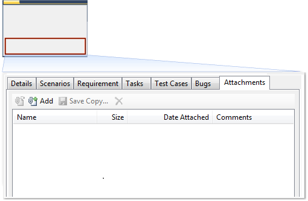

You add files to work items from the Attachments tab on the work item form. For example, you can attach an e-mail thread, a document, an image, a log file, or another type of file to any work item. This topic describes the controls and data fields that are associated with file attachments.
For more information about how to add attachments, see Create or Delete a File Attachment in a Work Item.
 Attachment
Toolbar Buttons
Attachment
Toolbar Buttons
The Attachment tab is located in the lower half of all work item forms, as the following illustration shows:
You
must click or attach a file before the buttons to open an attachment (), save a copy ( Save Copy ), and delete an attachment () become available.
Save Copy ), and delete an attachment () become available.
Attachment
File Count
The field in the following table does not appear on any work item form, but this information is tracked for each work item when you attach a file to it. You can use this field to filter queries and create reports. For information about data types and default field values, see Working with Work Item Fields.
|
Field name |
Description |
Reference name |
Data type |
Default value of the reportable type attribute |
Default value of the index attribute |
|---|---|---|---|---|---|
|
AttachedFileCount |
The number of file attachments. |
System.AttachedFileCount |
Integer |
None |
False |